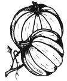

LEFT: Rich, mellow soil that has a high humus content is well-suited to the raising of pumpkins. If you have a tiller or plow, turn autumn leaves and animal manure into the whole pumpkin patch the fall before planting in the spring. If you work with a spade, prepare hills two or three feet in diameter the same way. ABOVE: Pumpkin plants may be started indoors in peat pots or similar ""plantable"" containers but?unlike tomatoes, peppers and cabbages ? their roots must not be disturbed when the starts are transplanted to the garden or field.